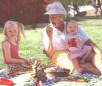
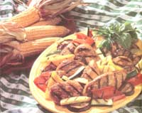

MOTHER'S KITCHEN
Making easy healthy, and sensible summer picnics.
Rosemary Payne and her granddaughters, Karen and Kaila, kick back with Anne's favorite picnic treats.
When it comes to holiday picnic food, there's no arguing with tradition. Aunt Martha will bring her annual potato salad, and grandma Bea wouldn't think of coming without her chocolate cream pie, and there's no way that I'm going to work it off playing volleyball in this heat. Instead, I've been lobbying for a spread that's a little lighter so we can afford that piece of chocolate cream pie. I'm going to try lots of seasonal fruits and vegetables so when cousin Harry moans about the carcinogens on the grilled brats, I can tell him the chlorophyll in green vegetables limits the body's absorption of carcinogens from grilled meat. That little factual tidbit will also help take the starch out of the meat-eaters when they start to circle the wagons.
Since white meat is so much more expensive than dark, I sometimes have the butcher give me boneless, skinless chicken thighs. (I hate doing the cutting myself.) The chicken can be served hot or at room temperature.
6 boneless, skinless chicken breasts, cut in half (12 pieces) Possible vegetables for grilling: eggplant, sliced into1/3" circles zucchini or summer squash, sliced length-wise into 1/3" strips red or yellow sweet peppers, quartered portabello mushrooms, whole fresh herbs, if available, for garnishing such as basil, oregano, thyme
¼ cup chicken broth
1/3 cup olive oil
½ cup balsamic vinegar
1-2 tablespoons minced garlic, depending on your preference
1 tablespoon Dijon mustard
2 teaspoons sugar
½ teaspoon salt a few dashes hot sauce freshly ground pepper
Whisk the marinade ingredients together in a bowl. Lay the chicken breasts in a rectangular glass pan or casserole and pour the marinade over the top just until it covers the chicken. In another pan, do the same with the sliced vegetables. Cover with plastic wrap and refrigerate for at least 4 hours or overnight. After a few hours, turn the chicken and vegetables over in the marinade. Prepare the grill. When the fire is hot, lay the chicken on the grill with the vegetables around the edges if there's room. (The vegetables can be grilled ahead of time if you wish since they'll be served at room temperature.) Cover and grill for about 5 minutes per side, watching the vegetables so that they don't burn. Brush the chicken with marinade if it starts to dry out. Add mesquite to the coals after the chicken is turned over if you wish. Discard the mari nade. Arrange on a platter and sprinkle with chopped herbs. Place the grilled vegetables around the edge of the platter.
It wouldn't be a barbecue without corn on the cob, summer corn so sweet and juicy that it barely needs butter. Why not throw it on the grill to save yourself the trouble of running indoors? Grilling corn takes a little longer than the kettle-of-boiling-water method so you may want to grill the corn first, then keep it warm in a covered roasting pan while you barbecue the rest of the meal. Buy justpicked corn at a farm stand and grill it the same day if possible. Keep the corn in the husks and refrigerate or keep in a cool place until needed.
Some folks wrap the husked corn and butter in foil to set on the grill, but I find that this way wastes time, foil, and you end up with steamed corn, which you could have done indoors. Grilled corn should taste ...uh, grilled.
Here's a simple way that works well for a large crowd but you'll need a large grill (or two). Peel away most of the outer husk until there's only a thin layer covering the corn. (The kernels should not show through.) Don't bother with the silk since it'll peel off later with the husks. Stick the ears vertically in a pail of cold water for about 30 minutes while you start the grill. When the grill is medium hot, lay the ears side by side on the grill and close the lid if there is one. Turn the ears every 5 minutes or so. After 15-20 minutes, check to see if the kernels near the base of the ear are tender. The husks will be browned and blackened in spots. Let your family peel back the husk to use for a handle and dunk their corn in the butter.
For very grilled corn, try this method. Round up the kids to husks the corn. (Tell them if they don't work, they don't eat). Brush the corn with canola or another mild oil. Place the ears directly on the grill. Keep turning them with thongs because they'll burn easily. The corn should be ready in 4-5 minutes.
Have a clean, 1-pound coffee can ready to set on a warm edge of the grill. When it's corn dunkin' time, place the can with hot butter (and whatever else you add) on a plate near the corn. The butter can also be brushed on the corn.
½ cup (1 stick) unsalted butter Or to lower saturated fat; ¼ cup unsalted butter, ¼ canola oil
5-6 fresh thyme twigs
2 large cloves garlic, smashed dash cayenne pepper and salt to taste
Heat the sauce on the grill in the coffee can or on the stove in a saucepan for about 10 minutes until the garlic is soft. Be careful not to burn the butter. Seasoning can be added to the butter at the end or directly on the corn.
½ cup (1 stick) unsalted butter (or use half canola oil)
¼ lime juice
1 tablespoon chili powder add pepper to taste Heat on the grill or stove until hot.
Note: The vegetables can be slightly firm when you remove them from the grill since they will soften as they sit.
Here's a '90s version of the old picnic standby. The roasted garlic for the dressing can be made a day or two ahead. This salad serves about six people, so you'll need to double it for a big crowd.
¼ pound green or yellow beans (or a mixture)
1 15-16 ounce can red kidney beans
1 15-16 ounce can cannellini (white kidney) beans*
1 medium red pepper, chopped into half-inch squares
1 medium red onion, quartered and thinly sliced
1 cup chopped herbs: Italian parsley, dill
1 head roasted garlic
2 tablespoons extra-virgin olive oil
¼ cup unsalted chicken broth
¼ cup white wine vinegar
1 teaspoon Dijon mustard
½ teaspoon salt
1/8 teaspoon cayenne pepper freshly ground pepper
Cut the top off a large head of garlic and wrap it in foil. Place in a 400°F oven for 1 hour until the cloves are mushy and slightly browned. Refrigerate until ready to use. Wash and string the green beans. Cut into 1-l½ inch pieces. Place in a vegetable steamer or a small amount of water in a covered saucepan. Simmer for about 2 minutes just until tender. (They should still be slightly crisp.) Remove from heat immediately and rinse the beans under cold water. Place in a large salad bowl. In a colander, rinse the canned beans under cold water. Add to the bowl with the pepper and onion.
If you're making the salad the day before, add the herbs and the dressing just before serving. Spoon out the garlic pulp and place in the blender. Add the rest of the dressing ingredients and blend until smooth. Toss with the salad and herbs. Serve at room temperature.
* To make a large batch for a crowd, double the recipe and use a 9½”x13" pan or one of a similar size.
3 pounds white or red-skinned small, new potatoes
6 green onions, chopped
¼ cup chopped, fresh dill optional garnish: fresh dill sprigs, cherry tomatoes, cucumber
Simmer the potatoes in a vegetable steamer in a covered pot for about 30 minutes until firm-done. (There shouldn't be resistance when stabbed with a fork, but if the potato falls apart they're overcooked.) Chill until cold. Small, new potatoes can be left whole, larger ones cut into 1-inch chunks. In a large bowl, gently toss with the other ingredients and the dressing. Cover and chill for at least 2 hours. The salad can be made a day ahead.
1 cup thick nonfat yogurt (1 use Dannon)
1 cup lowfat cottage cheese (I don' t like the taste of the nonfat cottage cheese but you can use it)
2 teaspoons minced garlic
½ teaspoon salt (more to taste)
1/8 teaspoon cayenne pepper freshly ground pepper or white pepper
Drain off any yogurt water before measuring. Place all the ingredients in the blender and blend until smooth. Put into a jar or plastic container for up to 2 days until you need it.
Here's a healthy alternative to Aunt Gertrude's chocolate-marshmallow bars. This is so easy, the kids can make it. No mixer needed, just stir the topping by hand. I use whatever fresh fruit is in season as long as it's ripe and sweet. Frozen fruit doesn't work since it's too watery.
about 3½ cups fresh berries (raspberries, blueberries) and cherries about 1½ cups sliced plums or nectarines (Peaches are too juicy this recipe.)
1 teaspoon arrowroot flour (for thickening)
1 tablespoon sugar, add more if the fruit isn't very sweet
¼ cup brown sugar, packed
½ teaspoon cinnamon
1 cup whole wheat pastry flour (or unbleached white flour)
3 tablespoons unsalted butter, melted
Preheat the oven to 375°F. Carefully toss the fruit with the arrowroot and sugar. Pour into an 8" or 9"-square baking pan or a casserole of similar size. Pit the cherries and pull or cut them into halves. Melt the butter.
In a mixing bowl, mix the sugar, cinnamon, and flour together with a fork. (Measure the flour by spooning it into the cup with a large spoon and leveling it off with a knife.) Add the butter and mix with the fork until the dough is the size of small peas. Spoon evenly on top of the fruit. Bake for 35-40 minutes until the top is lightly browned. Cool for at least 30 minutes before spooning into bowls. Serve with vanilla frozen yogurt or ice cream.
It's not only important what you serve but how you serve it. The Center for Disease Control reports that food-born illnesses increase during summer months due to unsafe food practices. Picnic food needs to be either very hot or very cold, with danger zone temperatures in-between. (Bacteria can multiply rapidly on a hot day.) Forget that fleeting fantasy about poisoning a relative or two. Here are some food safety tips for holiday-happy meals.
Transport food in a cooler: Unless your relatives live near by, it's a good idea to transport food in a cooler with ice packs. Chances are that there won't be room for your coleslaw in Aunt Martha's refrigerator.
Set up a sun-safe buffet: If your food table is outside, place it in the shade taking into account the rotation of the sun. Keep the food covered until you're ready to serve. I set cold foods in large, rectangular restaurant pans filled with ice. (You could also use disposable foil roasting pans.) This will enable the guests to graze the buffet for an hour or so without concern.
Keep hot foods hot: If you entertain often, you might want to check a restaurant supply store for a used chaffing dish that uses sternos. Stemos burn for 2-4 hours, which will enable you to keep grilled meat hot. (My large, rectangular chaffer has a bottom pan for an inch of water, an insert pan for food, and a lid.) If you don't have a chaffing dish, cover the meat with foil and only grill on demand. Leftover cooked meat can be wrapped and placed in a cooler. (Warning regarding stenos: Even after they burn out they're extremely hot so don't throw them in the garbage can until they've completely cooled. Don't ask how I know this. Let's just say that the firefighters who were called to the forest preserves were not amused.)
Watch out for cross-contamination: Plates, knives, and utensils that came in contact with raw meat should be taken inside and washed before they're used for other foods. Use a different platter for the cooked meat. Leftover meat marinades should be thrown out after the meat is on the grill.
When in doubt, throw it out: Don't send leftovers that have been sitting out all day home with the relatives. Most fruit and vegetables, desserts, and vinegar-based salads should be fine if they have only been out for a short time. Throw out high-risk foods that contain meat and dairy products.
|
 STYLIST: TRISH DAHL |
 |
|